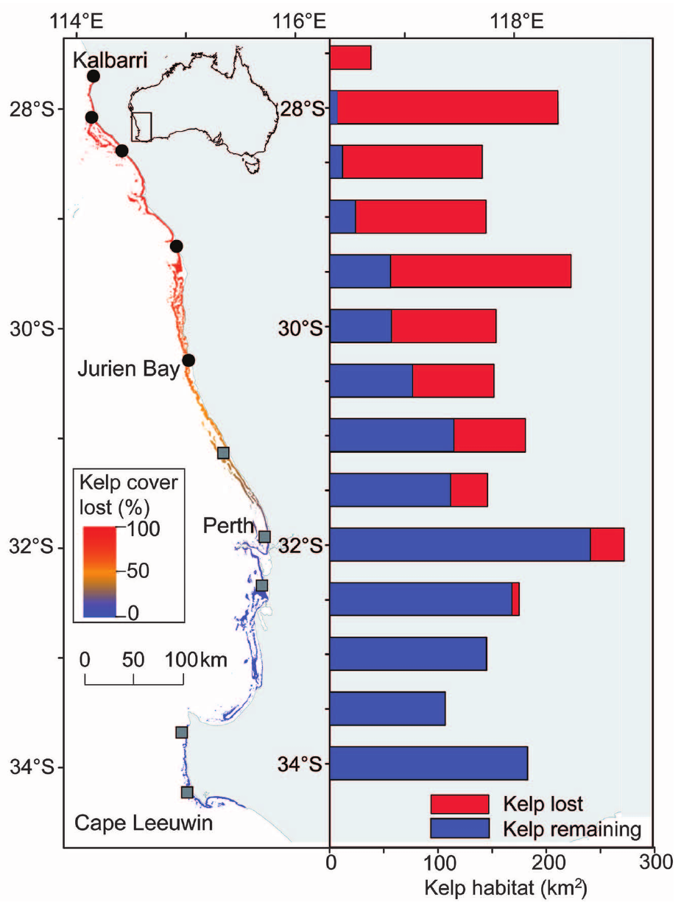
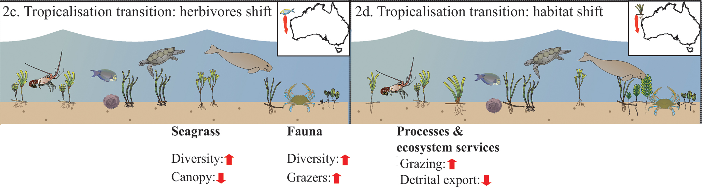

Climate change impact on
ocean forests
and their biodiversity
Trial lecture 03.05.2019
Alexander Jueterbock, Researcher at Nord University
The origin of fjords -
a hint to climate changes in the past
Ice ages in earth history
Pleistocene ice ages
Changes in
- Ice cover
- Sea level
- Ocean currents
- Ocean gateways
Fluctuations in temperature and CO2

Ocean acidification -
the other CO2 problem
Recent land and ocean warming
Recent vs. historical warming

Higher CO2 concentrations
Predicted temperature increase
+6°C in next 200 years
>4 times faster than historical temperature changes
What are ocean forests?
Marine macrophytes
Seaweed (brown macroalgae) vs. seagrass
Seaweeds and seagrasses are not closely related
Seaweed: >5,000 species
Seagrass: ca. 60 species
Seaweed growth forms

Kelp (and fucoid) distribution

Seagrass growth forms

Seagrass distribution

Why should we care about ocean forests?
Ecosystem services are worth
>16 000 Euros ha-1 year-1 (seagrass beds)
>450 000 Euros km-1 year-1 (kelp forests)
Nutrient fixation
Protection from erosion
Protection from desiccation
Habitat and food
Nursery grounds
Carbon sequestration (48-160 Tg C yr-1)
Carbon sequestration (61-268 Tg C yr-1)

Source of products

Which climate change related factor affects ocean forests most?
Climate change related factors
- Salinity
- pH
- Temperature
Identifying most important range-limiting factors

Temperature as most important factor

Seaweed distribution limited by isotherms
Diversity highest between 10°C summer and 20°C winter isotherm

How do rising temperatures affect
ocean forests
330 km poleward shift of the
15°C summer SST isotherm (1985-2000)
Global seaweed loss due to ocean warming
Predicted range shifts until year 2200

1999: extensive meadows of Fucus serratus

James Coyer
2010: 90% abundance decline in 11 years

1,250 km range contraction within 30 years


Loss of kelp forests in Western Australia
43% loss from 2011 to 2013
Ongoing colonization of Arctic regions

Dispersal and invasive potential

Extreme polar light conditions
Net loss of seagrass meadows
Global
17% no change
25% increase
58% decrease
Impact of marine heat waves on seagrass and kelp
36% of temperate seagrass damaged after heatwave

Range shift projections for Zostera noltii until 2100
Levels of biodiversity
- genetic
- species
- ecosystem
Climate change impact on genetic diversity
Genetic diversity of Fucus serratus
Three glacial refugia
Genetic diversity important for
- Adaptability and long-term survival
Genetic diversity enhances survivability

Genetic diversity important for
- Adaptability and long-term survival
- Survivability under stress
...heat stress recovery..
in Zostera marina

Genetic diversity important for
- Adaptability and long-term survival
- Survivability under stress
- Resilience
...biomass and faunal abundance...
in Zostera marina
Genetic diversity important for
- Adaptability and long-term survival
- Survivability under stress
- Resilience
- Ecosystem services
- Restoration
Centers of genetic diversity (glacial refugia) are threatened with extinction
Climate change impact on species diversity
Increasing diversity in the Arctic

Biodiveristy loss on stipes of warm-water kelp
Richness <12 x
Biomass <3600 x
Rising temperatures favor mussel recruitment
diversity is expected to decline
Future scenario for kelp and grazers
Future scenario for kelp and grazers
Heatwave caused shift from kelp forests to seaweed turfs in Western Australia
Shifts from kelp forests to sediment-laden turf
Flattending diversity

Poleward shift of herbivorous tropical fishes
Transition from kelp forests to coral reefs

Tropicalization of kelp forests in Southern Japan

Current difference between temperate and tropical seagrass ecosystems (in Australia)
Tropicalization of temperate seagrass meadows
- Increasing species diversity in the Arctic
- Decreasing diversity and regime shift in cold-temperate regions
- Tropicalization in warm-temperate regions
What is the impact of climate change on
ocean forests
and their
biodiversity
Additional slides
Loss of canopy-forming seaweeds in warm-temperate regions
Other biodiversity redistributions under climate change
Ecological Niche Modeling to predict future distribution

Common garden heat stress experiments

Common garden heat stress experiments
Photosynthetic performance

Heat stress response
...density and productivity.
in Zostera marina

Warming stimulates growth in northern populations


Poleward range extension of Laminaria hyperborea
Kelp
Seagrass
Temporal stability of genetic diversity


Impact of climate change

Intertidal species are particularly sensitive

Why are seaweeds ideal organisms to study climate change impact?
Causes of climate fluctuations

Fucoid (and kelp) distribution

Upwelling regions and deep reefs as climate change refugia
Upwelling regions along shores of SW-Iberia and NW-Africa are climate change refugia for Fucus guiryi
Dwarf forms with reduced reproductive capacity in Spain

Projected pH decrease

pH fluctuations in macroalgal beds
 pH
profile through a Fucus belt
under calm conditions day time = black dots,
night time = white dots) and on a windy day
(black triangles).
pH
profile through a Fucus belt
under calm conditions day time = black dots,
night time = white dots) and on a windy day
(black triangles).
Acidification is beneficial
Seagrass and most macroalgae can use CO2 and bicarbonate for photosynthesisTemperature more important than pH in Zostera noltii
Salinity
Salty parts have become saltier and fresh regions have become fresherSalinity changes are unlikely to have an impact
- Kelp germlings tolerate salinity changes of 15 PSU
- The seagrass Zostera marina grows in salinities ranging from 35 to 5 PSU